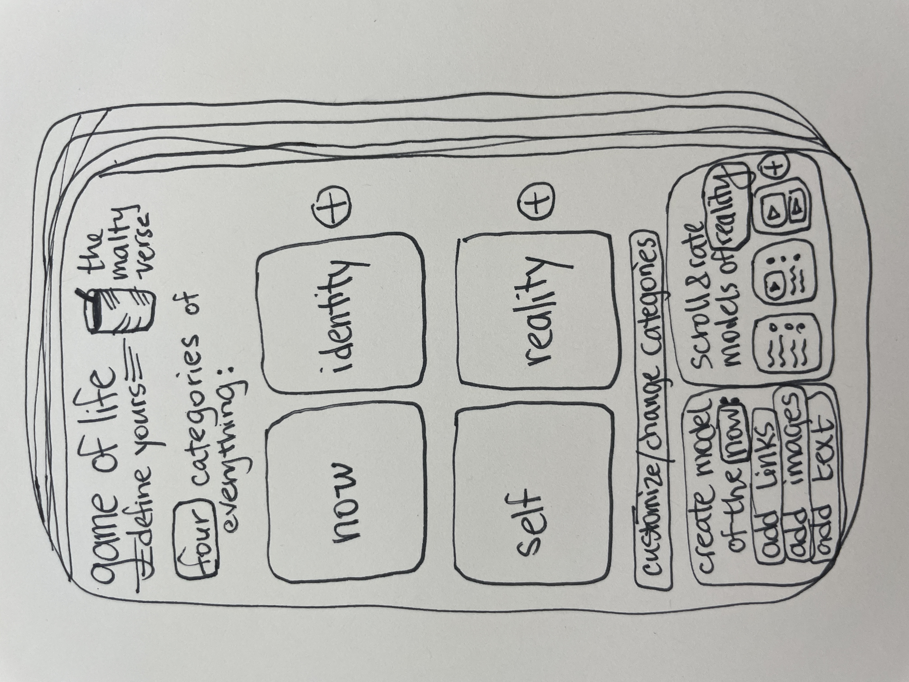

the malty verse


define your core contract as it evolves over time with nanoidentitycontracts
use custom emojis/glyphs, poetry/song lyrics, or legal language
i.e. create nanoidentitylanguages

if today was your last day on earth, what would you leave behind? what would you teach?
define your own game of life in the app
generate a news feed based on your custom game of life algorithm
compete, submit and rate others' game of life reality chips

if you have four cards in your hand, what are they? which four pieces of content? or glyphs? or words?
meditative bubble-popping homescreen to navigate through the app
mapping ideals, projects, and wisdom
with tables, icons, graphs and trees
copyright 2023 - ashley grevelink